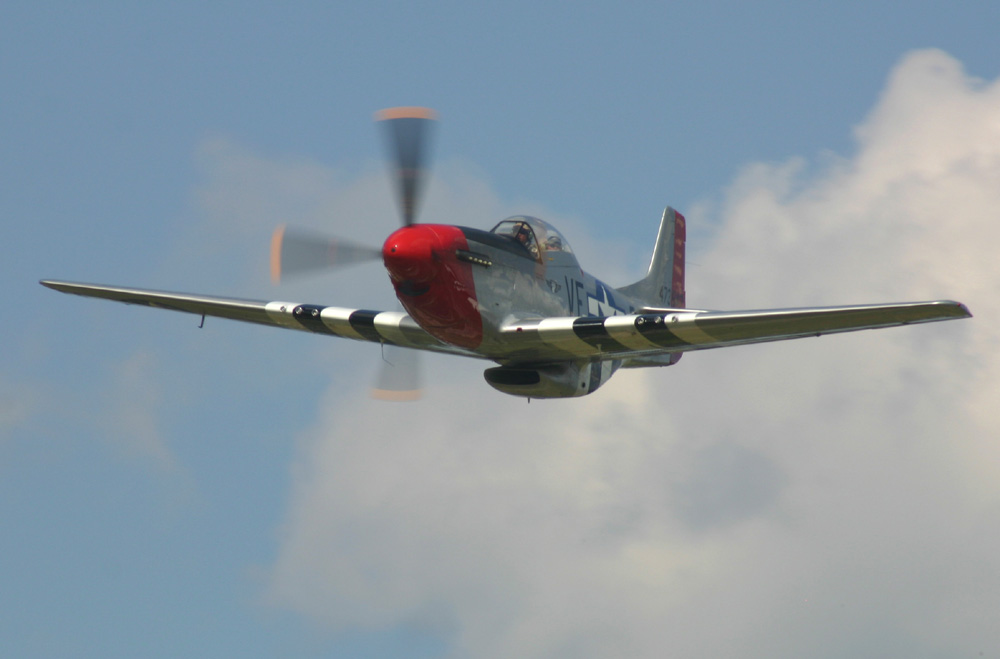

The Ride |
ride photos, click here |
Please consider all photos copyright (c) Jim Densmore, 2009.
It is 1 August 2009 and I have just returned from Airventure 2009 in Oshkosh, Wisconsin. Mike Davis and I took my Cessna 180, and we had a great time. Oshkosh is about people, comraderie, airplanes and air shows, camping, afternoon thunderstorms, and as usual it had all of that.
This year, however, there was something more for me, and an unbelievable experience for my friend and fellow 180 owner Bill Murrish. The Dixie Wing of the CAF (based in Peachtree City GA) was selling rides in the historically significant "Red Nose" P-51 Mustang, and Bill bought a ride. This was one of those must-do-'fore-I-die items for Bill. And the ride Bill received was much better than anyone, including his pilot, had hoped for.
I only know him by Stan. Stan was our pilot and one of the most experienced P-51 aviators in the Dixie Wing. We were fortunate enough to drive down to Fond Du Lac (FLD) from Oshkosh with Stan and another gentleman in the Dixie Wing. This gave Stan and Bill an opportunity to learn more about each other prior to their ride.
Upon arrival, the Mustang was just arriving from another ride. They did a nice low pass over runway 27 at FLD, which is immediately adjacent to the ramp where we stood. It looked great. After they landed, Bill received some help getting over to the airplane, getting his parachute on, and getting into the rear seat of the airplane. And then Stan climbed in, and they started up and exited the ramp with no fanfare.
After a short run up, the Red Nose Mustang 601 departed on runway 27. On the crosswind during the initial climbout, Stan called the temporary control tower at FLD and asked for a low pass prior to their departure out to the east so that Bill could handle the controls of the Mustang. Listening on a portable radio, the answer from the tower stunned everyone on the ramp: "Mustang 601, Fond du Lac tower, the very first aircraft I ever controlled in my career was a Mustang, and I'm retiring today after 30 years. Let's make the last one just as good. This airport is yours, you can do whatever you'd like."
In the cockpit over the intercom, Stan remarked to Bill, "I can't believe he just said that." Some of you readers might not be aware that this just isn't done. It takes months to get the waivers and accomplish all the planning that would go into closing an airport for the privilege of executing a low altitude series of maneuvers. In one statement, our retiring controller had short-circuited all of that bureaucracy and opened the airport to an impromptu air show by Stan, and the airplane ride of Bill's life. For that matter, after they landed, I asked Stan if he'd ever done a ride like that. With a very big grin on his face, he said no, and he didn't expect ever to get another chance.
What happened next was an aerobatic tour de force for any Mustang air show pilot short of Bob Hoover. Because it was focused on the spot occupied by the temporary control tower, it also proved to be a realistic reenactment of a Mustang serving the role of close air support for ground troops during World War II. As a result, the flight became a very emotional experience for everyone present to witness. To use a convenient movie reference, think about the scene at the end of the movie Saving Private Ryan. This simulated attack was very similar. Again and again Stan and Bill "strafed" the "enemy position" embodied by the temporary tower at the intersection of the two runways. Repeatedly the Mustang blew through the position, then pulled to the vertical to convert speed to altitude in preparation for the next run. During most of the turns the P-51 rolled well past the vertical, and the G meter loaded up to 4 G on many of the passes. Several times the pair flew right past the ramp where we were standing, going very fast. I attempted to get all the still photos I could on my Canon. On almost every occasion, I could see Bill giving us the thumbs-up. He was in Mustang heaven. Of course, you will have to close your eyes and imagine the beautiful, sonorous sound of the Merlin as they engaged in this remarkable set of low altitude maneuvers. It was nearly as fun for me on the ground as it was for Bill in the cockpit of the Mustang.
Finally they moved off to the east so Bill could fly the airplane. He told me he did several rolls and really enjoyed the handling characteristics of the fighter. Finally they returned and even a couple more times beat the aerodrome up before landing, extending the landing gear after one last strafing run. Not only was the ride a one-of-a-kind, Bill apparently got a bit longer ride than he had purchased. No worries. Stan and the Dixie Wing were very pleased to have been able to give the retiring controller a good and well-deserved show.
Gentle reader, if you have read this far, please consider a donation, however small or large, to the Dixie Wing of the CAF. They're at www.dixiewing.org, and they include lots of interesting information on the Red Nose Mustang. The Dixie Wing gave my friend one helluva ride and I think it would be great if we can help them maintain their aircraft, including their extremely rare SBD Dauntless. Thanks to Stan and the entire Dixie Wing for a very memorable experience.
Chronological photos of the ride
